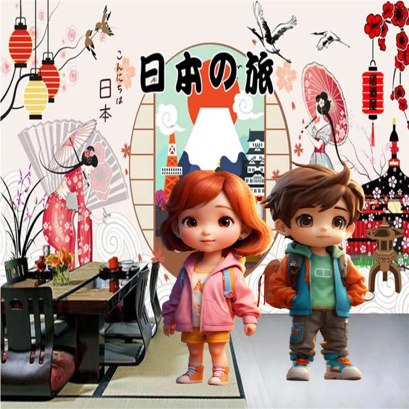

Мы вчера с родителями ходили японский ресторан и ели там суши и ролы - блюда национальной японской кухни. Мы очень любим суши. А какая твоя любимая еда? А что ты не любишь кушать? Что любят твои папа и мама?
Какой завтрак для тебя самый вкусный? Составишь свой любимый завтрак? Ещё на завтрак полезно выпить стакан свежевыжатого сока. Какой сок тебе нравится? Приготовим разные соки?
Представим, что мы открываем новый ресторан. Что нам для этого нужно? Кого мы пригласим на работу в наш ресторан? А как мы его назовём? Что будет в меню?